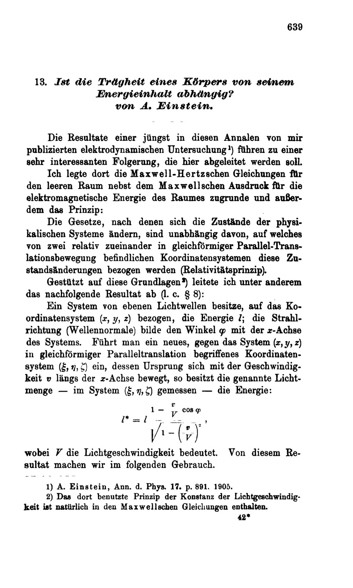
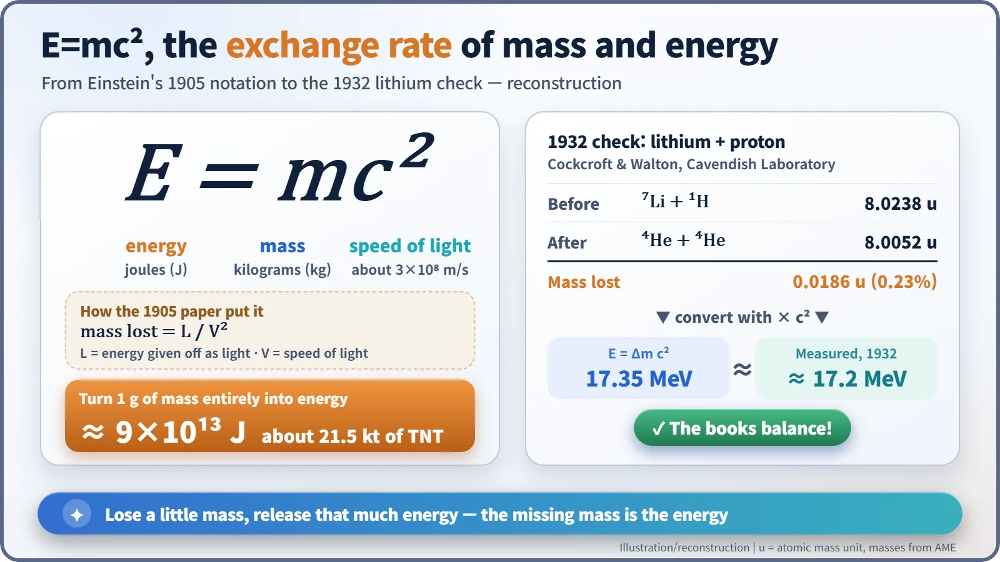
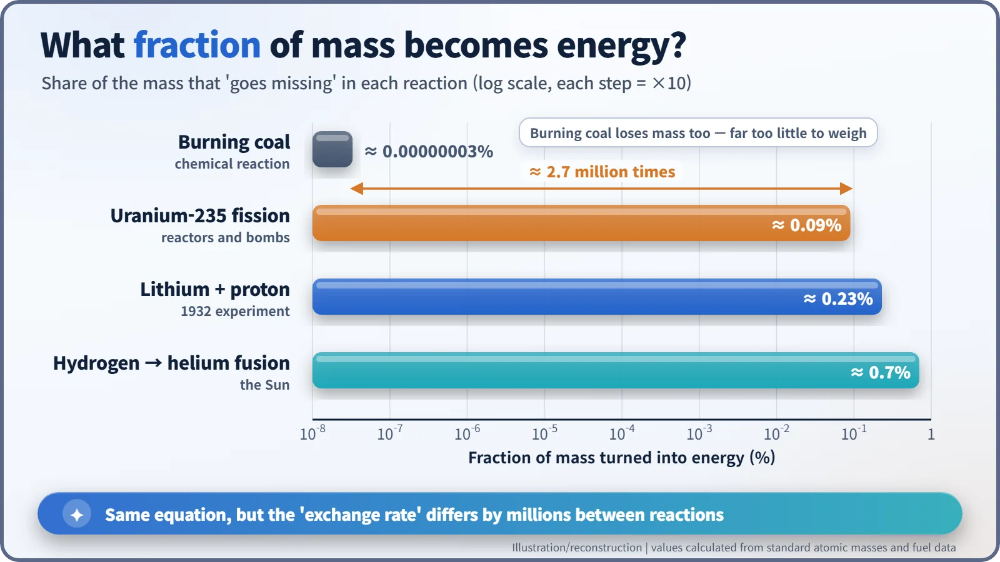
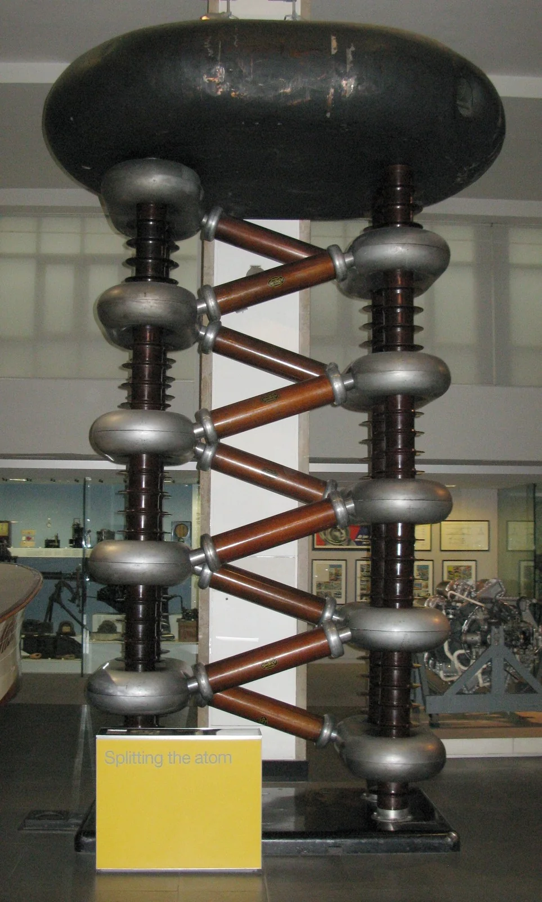

Nuclear History · 016
21 Kilotons in a Paper Clip — E=mc² and the Three-Page Paper on Mass–Energy Equivalence (1905)
A patent clerk's 'amusing' bonus idea turned mass and energy into two currencies with one enormous exchange rate.
In September 1905 a 26-year-old patent clerk named Albert Einstein sent a three-page paper to Annalen der Physik showing that a body giving off energy must lose mass. We now write the result as E=mc². It took 27 years to confirm in the laboratory, and contrary to popular belief it was not the recipe for the atomic bomb.
21 kilotons in a paper clip
A paper clip on your desk weighs about one gram. Suppose you could turn every bit of it into energy. How much would you get? The sum is short: take 0.001 kg and multiply it by the speed of light (about 300 million metres per second) twice. The answer is roughly 9×1013 joules, about the same as 21.5 kilotons of TNT. That staggering exchange rate was first written down in the autumn of 1905, in a paper just three pages long, by a clerk at the Swiss patent office in Bern. [2]
A bonus idea in the summer of 1905
In 1905 Albert Einstein (1879–1955) was 26 and worked as a technical examiner, third class, at the Federal Patent Office in Bern. On 30 June he sent off his paper on special relativity. Soon afterwards he realised that one more consequence followed from it. He wrote to his friend Conrad Habicht: "The idea is amusing and enticing, but whether the Lord is laughing at it and has played a trick on me, that I cannot know." (Our translation of the German original.) Even Einstein was not sure he believed it yet. [3]
27 September: a question for a title
He wrote the idea up, and the manuscript reached the German journal Annalen der Physik on 27 September 1905. It appeared on 21 November in volume 18, pages 639–641. The title is itself a question: "Ist die Trägheit eines Körpers von seinem Energieinhalt abhängig?" ("Does the inertia of a body depend upon its energy content?"). Inertia here means how hard something is to set moving; in other words, its mass. [1]

The argument rests on a single thought experiment. A body at rest sends out two equal bursts of light in opposite directions. Now let two observers do the bookkeeping: one standing beside the body, and one gliding past it. Einstein used a formula from his earlier paper for how much light energy a moving observer measures. When he balanced the two sets of books, they only agreed if the passing observer sees the body's energy of motion drop a little. The body's speed has not changed, so what must have dropped is its mass.
You will not find "E=mc²" anywhere in the paper. Instead there is this sentence (our translation): "If a body gives off the energy L in the form of radiation, its mass diminishes by L/V²." Einstein used L for energy and V for the speed of light. He then generalised: "The mass of a body is a measure of its energy content." The familiar form E=mc² settled in over the following years. [1] [2]

Reading E=mc² as a ledger
Think of the equation as a currency converter. Mass and energy are the same thing priced in two different currencies, and the exchange rate is c², about 9×1016 joules per kilogram. Because the rate is so huge, a tiny loss of mass releases an enormous amount of energy.
That clears up a common misunderstanding. In nuclear reactions, matter does not simply "vanish". The number of protons and neutrons stays the same before and after. What changes is how tightly they are bound together, that is, the energy of the bound state. When the particles settle into a more tightly bound arrangement, the whole thing becomes lighter by exactly that energy, and the difference comes out as heat and light. This "missing" share was later pinned down by precise mass measurements in the 1920s and became known as the mass defect.
The same ledger applies to a coal stove. Burning one gram of coal gives off about 30,000 joules, which corresponds to roughly 0.3 billionths of a gram, far too little for any scale to detect. In nuclear fission, about 0.1% of the mass turns into energy. That is why, gram for gram, nuclear fuel releases millions of times more energy than coal.

A proof radium could not deliver
At the end of the paper Einstein suggested that bodies whose energy content changes a great deal, such as radium salts, might allow the theory to be tested. Radium, which keeps itself warm, was the scientific sensation of the day. But the change in mass was far too small to measure with the instruments of the time. Critics also pointed out that his derivation relied on approximations and was not fully rigorous, and Einstein himself returned to the proof several times in later years. Similar relations had been worked out earlier for special cases involving light and radiation, by Henri Poincaré (1900) and Friedrich Hasenöhrl (1904). The usual assessment is that Einstein's contribution was to make it a principle that applies to all mass. [2]
The decisive check came 27 years later. On 14 April 1932, at the Cavendish Laboratory in Cambridge, England, John Cockcroft (1897–1967) and Ernest Walton (1903–1995) used an accelerator they had built themselves to fire fast protons at lithium. Lithium nuclei split into two helium nuclei, which flew apart with about 17.2 MeV of energy. Add up the masses before and after, and about 0.0186 atomic mass units, or 0.23% of the total, is missing. Multiply that by c², and it matches the measured energy. The two shared the 1951 Nobel Prize in Physics for their work on splitting atomic nuclei with artificially accelerated particles. [4] [5]

Not a blueprint for the bomb
You often hear that "E=mc² made the atomic bomb". The idea was cemented in July 1946, when Time magazine ran a cover showing Einstein with a mushroom cloud and the equation. But what made the bomb possible was the discovery of uranium fission at the end of 1938, together with the idea of a chain reaction, in which neutrons from one fission go on to split more nuclei. E=mc² helped physicists calculate and explain why each fission releases about 200 MeV. It says nothing about how to build anything. As the physicist Robert Serber later pointed out, fission itself is not a relativistic process. Einstein's real role was signing the 1939 letter to President Roosevelt; he did not take part in the bomb research. [2]
So E=mc² is less a blueprint than an accounting ledger. The same ledger explains why nuclear fuel lasts so long in a power reactor and why the Sun has been shining for billions of years. In 2005 a precision experiment using silicon and sulfur atoms confirmed that the books balance to within about four parts in ten million. The patent clerk's "amusing" bonus idea has not been caught out yet. [6] [7]